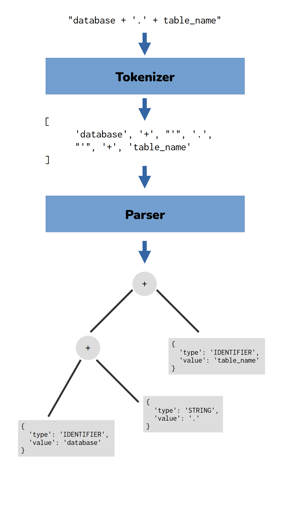
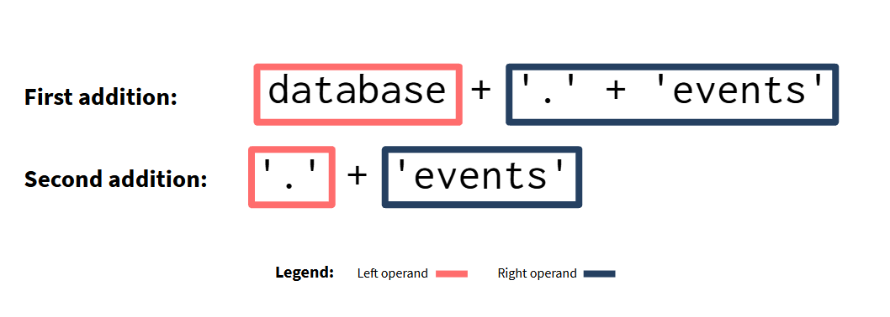

This past week I had to develop a parser for Python expressions with Python. In this article, I want to use this experience to introduce the subject of parsing to beginners.
Python
Parser
Author
Affiliation
Pedro Duarte Faria
Blip
Published
November 18, 2023
1 Introduction
Me and my team are currently working in a massive migration (similar to a cloud migration). This migration involves many process, but one of them is to redirect every table reference that we find in more than 130 thousand lines of Python code.
However, this task proved to be so complex that I had to develop a small parser for Python expressions. In this article, I want to use this experience to introduce the subject of parsing expressions to beginners.
2 Context about what we have to do
Most of these 130 thousand lines of Python code are pyspark code to extract, transform and load data using the Apache Spark engine.
Let’s consider the following example:
Listing 1: Example of pyspark code that we might find in our codebase
from pyspark.sql import SparkSessionspark = SparkSession.builder.getOrCreate()df = spark.table("blip.events")df.show()
You can see at Listing 1 that we have a spark.table() call to access the SQL table blip.events. In other words, we are basically making a SELECT * FROM query over this table. However, in our new infrastructure, all table references will change. As a result, me and my team need to rewrite every table reference that we find across our codebase.
For example, let’s suppose that the new table reference is platform.blipraw.events. This means that I need to alter the above snippet of code to:
Listing 2: Example with the new reference
from pyspark.sql import SparkSessionspark = SparkSession.builder.getOrCreate()df = spark.table("platform.blipraw.events")df.show()
2.1 The quick and dirty approach
This does not look so bad, right? I mean, considering the above example, I could just use a simple REGEX (regular expression) to find the places where I have an spark.table() call, capture the reference given as input, alter it to the new reference, and replace the text with the new reference.
This approach would involve some code similar to this:
It would be great if it was that simple, but unfortunately, it is not. What makes this problem so challenging is that the table reference used in spark.table() appears in too many different formats across the 130 thousand lines in our codebase. For example, we might use a formatted string to actually compute the table reference:
These two examples demonstrates that too much variation exists in the use of a table reference. So much variation, that using multiple REGEX’s to solve this problem would be impractical, and probably too much complex.
Here is where the parser comes into place.
3 Introducing the parser
3.1 What is a parser?
Parsers (or the process of parsing expressions) are core components of every existing compiler, like gcc or rustc, as well as the R and Python compilers. In essence, a parser is a piece of software that analyzes expressions following the rules of a grammar. A parser is the main part of compilers responsible for analyzing and comprehend the structure of your source code.
The process of parsing is usually made in two steps, which are: 1) breaking (or “splitting”) the input expression into smaller pieces, building a list of tokens, or a list of small components; 2) analyzing this sequence of tokens to build a tree that is equivalent to the input expression. The first step above is usually made by a component called lexer or tokenizer (both names are commom to find), and the second step is made by the parser itself.
Basically, the process of parsing takes a string (which contains the expression, or the source code your want to parse) as input. Then, the lexer (or tokenizer) breaks the input string into smaller pieces, which are usually called tokens. Then, the parser receives this stream of tokens produced by the tokenizer as input, and starts to analyze this sequence of tokens, to understand the structure of the input expression (or source code). As output, the parser produces a tree that is equivalent to the input expression, which is usually called abstract syntax tree (or AST for short). Figure 1 below exposes this process.

Figure 1: The process of parsing
So the process of parsing takes an expression as input, and builds a tree that is equivalent to that expression as output. This process of parsing is always one of the first operations that a compiler performs.
Because trees are a much more suitable and efficient data structure for the different tasks a compiler performs such as: type and syntax checking, evaluating the result of expressions and assignments, or compiling the input tree into machine code to be executed.
Probably, the most important data structures for every compiler are trees and stacks.
3.2 What kind of expressions we want to parse?
Just to be clear, we neither need (or want) to develop a complete parser capable of parsing every expression in the Python language. That would be a much larger task, that would involve a great amount of effort. We just want to build a small parser capable of parsing a very small and specific subset of Python expressions.
We are particularly interested in the expressions that are related to the table references that we find in our codebase. We already showed examples of these expressions at Section 2 and Section 2.2.
But just to state clearly, we want to build a parser capable of parsing:
expressions that involves only string constants (other types of constants or structures such as lists, integers, booleans are not important for us, so let’s ignore them). Example: "platform.blipraw.events".
expressions that concatenate strings with the plus operator. Example: "blip" + "." + "events".
expressions that contains identifiers (that is, variable names). Example: database + "." + table_name.
formatted strings which contain expressions that fit the above cases. Example: f"{database}.{table_name}".
Lets store these examples of expressions inside a list that we can easily access:
Lets begin by building a lexer (or tokenizer) for our parser. Just be aware that, from now on, I will use the term tokenizer instead of lexer (this is just a personal preference).
But how can we split our input string into small pieces? Well, there are different approaches to do this. However, one particular approach that fit’s perfectly our example here is to iterate through the characters of our input string, and look for single characters that represent “elegible break points”, or points where we can split the string.
This approach is probably the easiest of all to implement, and it fit’s perfectly our example here because we are interested in parsing just a very small subset of simple Python expressions. If we wanted to parse more complex expressions, then, it would probably be better to use another approach to break the input string.
So, the tokenizer will iterate through each character in the input string, and will mark any place that contains a single character the we interpret as an elegible place to break the string. Considering the type of expressions we stated at Section 3.2, the characters ", ', +, {, } are good candidates for “elegible break points”. Also, the character f is important for identifying formatted strings, as a consequence, he is also a good candidate.
Let’s consider the following tokenizer:
Listing 3: The function that represents our tokenizer
from typing import Listimport reis_not_blank =lambda x: x !=""andnot re.search(r"^ +$", x)def tokenizer(input_string: str) -> List[str]: candidates = ["'", '"', '+', '{', '}'] break_points =list()for i inrange(len(input_string)): current_char = input_string[i]if current_char in candidates: break_points.append(i)if current_char =="f"and (i +1) <len(input_string): next_char = input_string[i +1]if next_char in ['"', "'"]: break_points.append(i)iflen(break_points) ==0:return [input_string] tokens =list() last_index =0for index in break_points: tokens.append(input_string[last_index:index]) tokens.append(input_string[index:(index+1)]) last_index = index +1 tokens.append(input_string[last_index:])returnlist(filter(is_not_blank, tokens))
If current character is f check if the next character is the beginning of a string (characters " and '), if it is the beginning of a string, then, it is a formatted string and should be included in the “break points”. If the next character is not the beginning of a string, then, we should not consider it as an elegible breakpoint, because it probably is just a letter “f” inside a variable name, such as platform_database.
If no break point position was found, then, the input expression is likely an expression with a single component. For example, a single string constant (e.g. "blip.events") or a single variable name (events_table). In this case, the tokenizer should return this single component itself as the only token present in the input string.
Every iteration of the loop generates two different tokens, which are: 1) a token with the part of the string from the previous break point index until the current elegible break point index; 2) and another token containing the single character that identifies the current elegible breakpoint. For example, the text database" will generate the break point index 8, so, in the first iteration of the loop, the tokens 'database' and '"' will be generated.
Empty tokens (i.e. tokens that are empty strings, or, that contains only spaces) can be generated during the process. So we use filter() with a lambda function to eliminate them from the output.
This tokenizer() function generates a list of tokens to be analyzed by the parser:
for example in EXPRESSION_EXAMPLES: tokens = tokenizer(example)print("================================================================")print(" * Input expression: ", example)print(" * Tokens produced: ", tokens)
Building the actual parser is definitely the hard part. Because a parser usually involves: 1) having a variable to store the current state of the parser, or, the current state of the AST; 2) and also some level of recursion to traverse the AST, or to decide which move or production rule should be applied. Making these two components working well together can be difficult depending on how you implement it.
3.4.1 The different types of strategies
Remember, the end goal of a parser, is to build an abstract syntax tree (AST) by analizing a sequence of tokens. There are different strategies to build this tree, and they are usually divided into two categories: 1) top-down. These are strategies that builds the tree from the root, and work they way to the bottom of the tree, which contains the “leaves of the tree”; 2) bottom-up (the inverse). These are strategies which starts to build the tree from the leaves, and work they way up until it hits the root of the tree.
In the subject of parsing, top-down strategies are the most popular (notice that this does not mean that bottom-up strategies are bad or not commom). The most popular strategy of all is the Recursive Descent, which is a top-down strategy. But I will not describe these strategy here, specially to avoid all the technical jargon that they bring with them. Anyway, just be aware that there are different strategies out there, and that in this article I’m only presenting one of them.
3.4.2 The smaller components of a parser
Every parser usually involves two smaller components: 1) a cache that holds the current state of the parser. This cache stores variables that are essential to the parsing process, such as the current state of the AST builded by the parser; 2) and a control (or “decision-making”) mechanism, which is usually a collection of methods or functions that decides which move the parser should make considering it’s current state (Gries and Schneider (2008)).
Some degree of recursion is found very frequently on some of these methods or functions that decides which move the parser should make. Although this recursion is not something mandatory, because there are some available strategies to build the AST that do not involves any recursion at all.
3.4.3 The cache to store the current parser’s state
Lets build a Python class to represent the cache of the parser. This ParserCache class will be responsible for storing all variables that are vital to the parsing process. These variables are:
ast: stores the current state of the AST.
tokens: stores the full sequence of tokens that the parser needs to analyze.
index: stores the index on the sequence of tokens that the parser is currently on.
token: stores a copy of the current token that the parser is analyzing at the moment.
It is not really vital to have the token variable, because we could easily access the current token by using tokens[index]. But… having a variable called token is easier to type, and it makes most of the parser’s code more readable, so, it is woth it.
While the parser is analyzing the sequence of tokens stored at the tokens variable, he will slowly grow (or complete) the AST, by replacing and adding elements to the ast variable. At the end, when the parser finishs the parsing process, the ast variable will store the complete AST that is equivalent to the input expression.
You can see below at the __init__() method that to initialize a new object of class ParserCache, you need to give the sequence of tokens to analyze as input. After that, all variables of the class are initialized, and you can start to use the two methods of the class, which are len(), current_token() and next_token(). The len() method returns the length of the tokens sequence that the parser is analyzing, current_token() method returns the current token that the parser is analyzing at the moment, and the next_token() method will effectively advance the parser to the next token in the sequence.
class ParserCache:'''Class that represents a cache to store the current state of the parser.'''def__init__(self, tokens: List[str]) ->None:self.ast =list()self.tokens = tokensself.index =0iflen(tokens) >0:self.token = tokens[self.index]else:self.token =Nonereturndeflen(self) ->int:returnlen(self.tokens)def current_token(self) ->str:returnself.tokendef current_index(self) ->int:returnself.indexdef next_token(self) ->None:self.index +=1ifself.index <len(self.tokens):self.token =self.tokens[self.index]return
3.4.4 The main function or entrypoint for the parser
We need a main function for the parser, and that is the parse() function. In other words, this is the public API or the main entrypoint of the parser. That is the function that we should use to effectively parse any input and get the resulting AST.
You can see below that all of this function does is: get the input string; generate the tokens with tokenizer(); initialize the parser’s cache with these tokens; and then, it calls a private function called _parse_input() to initiate the parsing process.
Once _parse_input() is done with the parsing process, parse() gets the parsing results and simply return the complete AST produced, which is stored in the ast variable of the parser’s cache.
The true magic starts with the private function _parse_input(). Basically, _parse_input() starts by looking at the current of token in the sequence that is being analyzed.
If this current token represents the beginning of a string (characters " and '), _parse_string() is called to effectively parse the next tokens in the sequence, which (very likely) are the contents of that string. If this current token is f, then, we have the beginning of a formatted string, so we just skip this f token with parse_cache.next_token(), and call _parse_string() to parse the formatted string. But if this token is a plus sign, then, he will call _parse_addition() to parse this token. If the current token is neither the beginning of a string or a plus sign, then, _parse_input() will assume that this current token is an identifier, and he will call _parse_identifier() to parse it.
Notice that all of these three parsing functions (_parse_string(), _parse_addition() and _parse_identifier()) returns the ParserCache object back as output. In other words, these functions receives the parser cache as input, they use this cache to parse the current token, and they add new elements (or replace the existing ones) to the AST, which is stored inside this cache object. Once they finished their businesses, they simply return this cache back as their output.
After we know that we parsed the current token, then, we ask the parser to advance to the next token, with next_token() method. Then, we check if there is really a next token in the sequence to parse/analyze, by checking if the current index is greater than the number of tokens in the sequence.
If there are still some remaining tokens in the sequence to analyze, then, _parse_input() will call itself recursively to parse the remaining tokens in the sequence. However, if there is not remaining tokens to analyze anymore, then, the function finally returns the parser cache (which contains the complete AST inside of the ast variable) as output.
If the sequence of tokens is empty, then, we have no tokens to analyze, and the function should simply return right away.
Yes! I know what you are thinking. If the current token is neither the beginning of a string or a plus sign, then, he could be anything else. For example, he could be the beginning of a function call, or, a logic comparison, or it could be the beginning of an assignment expression. Anyway, it could be many things! So in theory, it is not safe to simply assume that it is an identifier.
However, you need to remember what we proposed at Section 3.2. We want to parse only a very small subset of Python expressions. We do not want (or care) to parse other kinds of expressions. If you look at the expressions examples that fitted the description in Section 3.2, you will see that the only components that appears in those expressions are identifiers, additions and string constants.
That is why we care only about these components. That is why, for this specific case, it is safe to assume that the last option has to be an identifier.
3.4.6 Parsing identifiers
Lets begin by discussing what the _parse_identifier() function should do. Because parsing an identifier component is by far the simplest of all three components. I mean… how would you parse an identifier? To answer this question, is probably best to think what an identifier is.
Well, an identifier is just a name to a variable, right? So, the value of an identifier object should be the identifier itself! In other words, the name of the variable is the identifier itself. So why not just simply add to the AST an object of type IDENTIFIER and the value of that object being the current token which is the identifier (or the variable name) itself? Right? That should be sufficient.
So we have the following body for _parse_identifier():
Now, things get worse when it is time to parse strings. Not because strings are complicated, but because we need to account for formatted strings. In other words, the string that we analyzing might contain expressions inside of it. And if it does have them, we need to parse these expressions in a separate process.
However, if you come back and look at the body of _parse_input() you will see that we call _parse_string() right after we encounter a " or ' character. But we do not need to parse this single character exactly. We just know that these characters delimit the beginning of a string, so everything that goes after it should be tokens that together composes the actual content of the string. That is why, we start _parse_string() by calling the next_token() method, to skip this " or ' character that we are not particularly interested in.
Now, after that, the next tokens in the sequence will very likely represent the contents of this string that we are currently parsing. So all we need to do, is to use a loop to iterate trough these next tokens and stop (or break) the loop in the moment that we hit a token that contains the " or ' character, because these tokens will represent the end of the string.
We could use a stack to accumulate the tokens that represents the contents of the string while we are looping, and then, we analyze these tokens separately after we break the loop. Then, we could simply append to the AST a new object of type STRING containing this stack with all of the components of this string element. It would be a fair strategy. But it would also make the parsing of subexpressions inside of formatted strings harder.
As a result, I decided to opt for a placeholder strategy. Before we start to loop through the sequence of tokens that represents the contents of the string, we add a placeholder at the top level of the AST. At each iteration of the while loop we update the value field of this placeholder by adding the current token to it. By doing this, at the end of the while loop we will have a string object at the top of the AST, and its value field will contain the full/complete list of contents of that string.
Now… if we do find a opening bracket ({) inside the string, that likely means that the current string that we are analyzing now is a formatted string, and whatever sequence of tokens that is right after this opening bracket, they are a new expression to be parsed. That is why we call the _parse_formatted_string() in case we do find an opening bracket inside the string.
def _parse_string(parser_cache: ParserCache) -> ParserCache:1 char_that_opens_the_string = parser_cache.current_token() parser_cache.next_token()# Add a placeholder in the top of the AST parser_cache.ast.append({'type': 'STRING','value': list() })while parser_cache.current_index() < parser_cache.len() -1:if parser_cache.current_token() == char_that_opens_the_string:breakif parser_cache.current_token() =='{': parser_cache.next_token() parser_cache = _parse_formatted_string(parser_cache)continue elem_ref = parser_cache.ast[-1] elem_ref['value'].append(parser_cache.current_token()) parser_cache.next_token()return parser_cache
1
We copy the character (' or ") that openned the string that we are analyzing now, because then, we can search for a new occurence of this same character in the tokens sequence to detect the end of the string.
We call _parse_formatted_string() if we find a { character inside sequence of tokens that are inside a string. Inside the pair of brackets ({}) we will always have an expression. And because this is a new expression, we need to parse it too, in a separate process.
First, we use a loop and a stack object to accumulate all the tokens in the sequence that are inside of the pair of brackets ({}). This way, we have inside the stack object all the tokens that represents the subexpression that is inside of the brackets that we need to parse.
We break the loop, at the moment that we find a closing bracket in the sequence of tokens, because this character represents the end of the pair of brackets that contains the subexpression that we are analyzing.
After we accumulated the sequence of tokens that represents the subexpression that we are analyzing, we need to parse this subexpression separately. To do that, we create a new ParserCache object with this sequence of tokens that represents this subexpression, or, in other words, with all of the tokens that are between the openning and closing brackets. Then, we just call the _parse_input() over this expression to effectively parse this expression.
After that, we add to the top of the AST a new expression object (EXPR) that contains the AST of parsed subexpression inside of it.
3.4.9 Parsing addition operations
Now, things get a little bit more complicated when we find a plus sign in the middle of the sequence of tokens. Because if we do find a plus sign, that means that this plus sign is surrounded by operands in the original expression. In other words, this plus sign connects the left operand to the right operand of this addition operation.
In theory, the previous token in the sequence is the left operand of this addition, and the next token in the sequence is the right operand. That means that, just in theory, at the moment we find a plus sign in the sequence of tokens, we can collect the left operand of the addition operation by looking at the previous token, and, we could also collect the right operand by advancing the parser with next_token() and using current_token() to get the next token in the sequence.
3.4.9.1 The challenge
However, this is not really true, or, it would be too easy to be true. The real problem, is that the left and right operands could be splitten by the tokenizer into multiple tokens. In other words, there are very commom cases where single calls to current_token() would be insufficient to actually get the complete right or left operands.
That means that the tokenizer step might make the part of identifying where the left and right operands are in the sequence of tokens a difficult task. If you think about how the tokenizer works (see Listing 3), you will probably be able to find examples where the left or right operands could be composed of multiple tokens, and not just a single token.
Take the expression database + '.events' as an example. Take a look at the tokenizer’s output over this expression. The left operand is the first token (database), but the right operand, is actually the three last tokens in the sequence (['"', '.events', '"']). This means that these three tokens together compose the right operand.
print(tokenizer('database + ".events"'))
['database ', '+', '"', '.events', '"']
As a result, at the moment where the parser is at the plus sign, if we advance the parser with next_token(), and run current_token() we would get only the token ", so the right operand would be incomplete. How do we know that we need to accumulate the next three tokens instead of looking to just one token in the sequence?
3.4.9.2 Solving the issue for the left operand
For now, lets ignore the right operand and think about the left operand. The left operand is whatever sequence of tokens that are before the plus sign. But, as we saw in the previous section, in some cases, we might need to look 3, 4 or 5 tokens behind to actually get the full left operand, instead of looking at just 1 token behind.
But instead of looking at the previous tokens in the sequence, we could get the left operand by looking at the top of the AST. In other words, the last element in the AST is the previous token already parsed, and we can easily access this last element by calling parser_cache.ast[-1].
Perfect, after we saved a copy of the left operand inside a left_operand variable, we can delete him from the AST in the parser cache, with del parser_cache.ast[-1]. If we do not delete him now, then, he would become duplicated in the AST at the moment that we add our object for the addition operation to the AST, which contains both left and right operands.
def _parse_addition(parser_cache: ParserCache) -> ParserCache: left_operand = parser_cache.ast[-1]del parser_cache.ast[-1]# Now that we managed the left operando, we will deal# with the right operand in the next sectionreturn parser_cache
3.4.9.3 Solving the issue for the right operand
After we deleted the last element in the AST (which contained the left operand), we can now look for the right operand, which is whatever sequence of tokens that are after the plus sign.
But getting the right operand is unfortunately more complicated. Because of that, let’s concentrate the main logic of getting the right operand into a new separate function called _parse_right_operand(). After we get the right operand, we just return from _parse_addition() with an ADDITION object which contains both left and right operands.
Now, what _parse_right_operand() should do? I think it should iterate through the sequence of tokens that is after the plus sign, parse this sequence of tokens and then, return the parsed AST of this sequence. That is basically what _parse_right_operand() is doing in the function definition below.
We start with a while loop which will use a new stack object to accumulate all the tokens after the plus sign. This loop stops in two situations:
If it hits the end of the stream of tokens that the parser is analyzing.
If it hits a new plus sign in the sequence of tokens, which basically means that, the loop found a new addition operation in the sequence of tokens.
When the loop stops in situation 1, then, the stack object will contain all of the tokens that represents the right operand. Having that in mind, all we need to do is to create a new temporary ParserCache object with these tokens, and call _parse_input() over it to parse the right operand. Then, _parse_right_operand() will simply return the parsed AST from this operation.
In the other side, if the loop stops in situation 2, that means that, the right operand that we are currently trying to parse, is in fact, the left hand to a new addition operation. In other words, the tokens that we accumulated in the stack object until this very moment, are in fact, the tokens that represents the left operand of this new addition operation that we found.
At Figure 2 we can see this idea visually. Everything that is marked by the light red rectangle is the left operand of that particular addition operation, and everything that is marked by the dark blue rectangle is the right operand of that particular addition operation.

Figure 2: Marking the right and left operands in each addition operation
So, lets consider as an example, that the parser was parsing the expression database + '.' + 'events'. When _parse_right_operand() is parsing the right operand of the first addition (which is '.'), the function is looping through the sequence of tokens. The tokens ["'", '.', "'"] are accumulated inside the stack object, until the loop hits the token +, which is second plus sign in the entire input expression. At this point the function understands that it hitted a new addition operation to be parsed.
That is why _parse_right_operand(), in this situation, will call itself recursively to parse the remaining tokens in the sequence, which are the right operand of this new/second addition it founded. The tokens that are accumulated in the stack object, are the left operand of this new/second addition, and they are parsed by _parse_input().
So in this situation, to get the actual right operand of the first addition, _parse_right_operand() needs to parse this new/second addition operation that if founded. The right operand of the first addition, is the second addition in its entirety, or, you could also interpret that the right operand of the first addition is the second addition already parsed. That is why, in this situation, _parse_right_operand() will call both _parse_input() and itself recursively to parse the right and left operands of this new/second addition operation, and return the ADDITION object that represents this parsed new/second addition.
Having all of these aspects in mind, here is the source code for _parse_right_operand():
You can see in the above output, that parser I presented here produces an AST which is composed by a list of dict (or JSON) objects which describes the elements of the three. Now that we have this three, we might do a lot of different things with it. As I mentioned before, every compiler uses trees like this to do type checking, to identify dependencies of your source code, and also, to perform optimization processes.
But these operations are out of the scope of this article. Our objective here is complete, which was to show a basic example of a parser written in Python. If you want to take a closer look, you can see the full source code of the parser at parser.py.
References
Gries, David, and Fred B. Schneider. 2008. Parsing Techniques: A Practical Guide. 2nd ed. Springer.